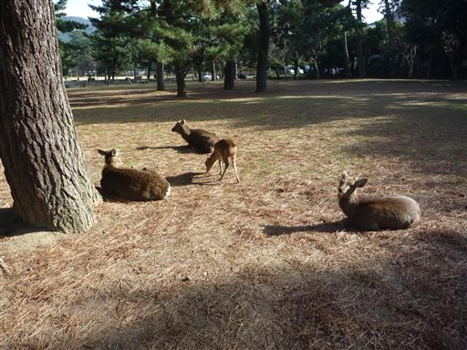
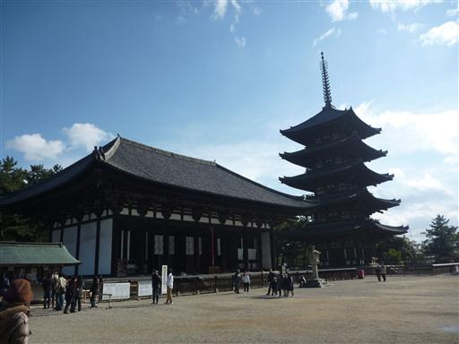
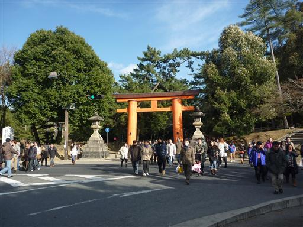
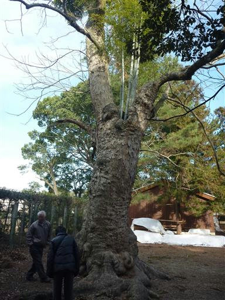
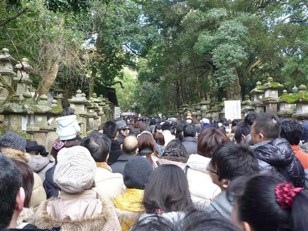
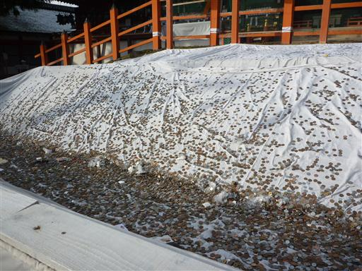
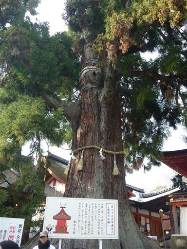
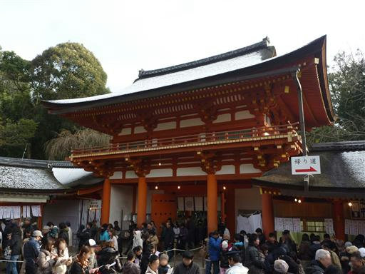

興福寺・春日大社
| 日付 | 2011年1月1日（土） |
|---|---|
| メンバー | 家族（妻、両親） |
| アクセス | 電車 |
今年の初詣は興福寺と春日大社に行くことにする。
奈良駅から少し歩くと、早速シカがお出迎え。

興福寺に到着。五重塔が美しい。
興福寺といえば阿修羅像が有名だ。

お隣にある春日大社に寄っていくことにする。

木のうろから竹が生えている。

興福寺は人が少なかったが、春日大社は大混雑。
なかなか前に進まない。

ようやくお賽銭の場所まで到着。次々とお金が飛んでくる。

立派な杉がまっすぐ上に向かって伸びている。

雪が積もる寒い寒い日の初詣だった。
